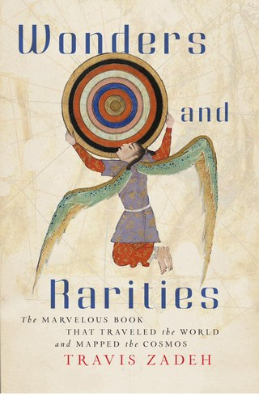
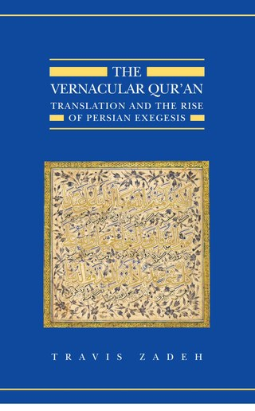
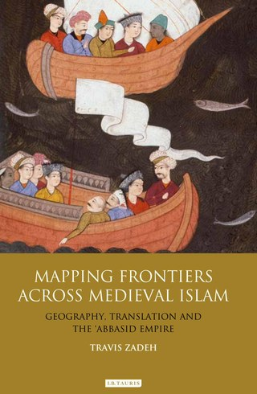
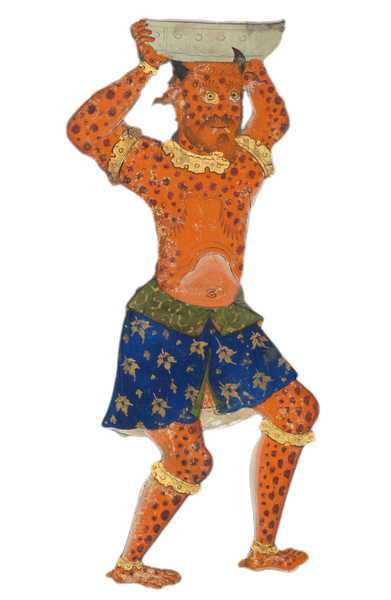

Publications
Books

Wonders and Rarities
The Marvelous Book that Traveled the World and Mapped the Cosmos
Harvard University Press, 2023 · Paperback edition, 2024 · xii, 445 pages
This book traces the global history of a celebrated Arabic natural history, following its translations, adaptations, and transformations across seven centuries and multiple continents. By tracking a single text across the Indian Ocean, the Mediterranean, and into early modern Europe, the book offers a new account of the global circulation of Islamic knowledge and the encyclopedic ambition to map the cosmos.

The Vernacular Qur’an
Translation and the Rise of Persian Exegesis
Oxford University Press, 2012 · xxii, 674 pages
The first sustained examination of the early history of Quran translation, this book recovers a forgotten archive of Persian renderings of the scripture and the theological controversies surrounding them. Drawing on manuscript collections across three continents, it traces the development of Persian exegetical traditions and challenges the assumption that the Quran was always received as an untranslatable Arabic original.

Mapping Frontiers across Medieval Islam
Geography, Translation, and the Abbasid Empire
I.B. Tauris, 2011 · Paperback edition, 2017 · xiv, 316 pages
This book examines how Muslim administrators, merchants, scholars, and interpreters of the Abbasid era (750–1258) conceived of and represented the frontiers of the Islamic world. Drawing on administrative geographies, legal manuals, and cosmographical literature, it argues that wonder and monstrosity were not peripheral curiosities but were embedded in the theological and imperial frameworks that governed how the world was understood and mapped.
Select Articles & Chapters
I. Occult Sciences, Natural Philosophy and the Boundaries of Normativity
- “Tracing the Sorcerer’s Circle: Demons, Polysemy, and the Boundaries of Islamic Normativity.” Micrologus, 33 (2025): 91–154. PDF
- “Cutting Ariadne’s Thread, or How to Think Otherwise in the Maze.” In Islamicate Occult Sciences in Theory and Practice, ed. Liana Saif et al. Leiden: Brill, 2020, 607–50. PDF
- “Magic, Marvel, and Miracle in Early Islamic Thought.” In The Cambridge History of Magic and Witchcraft in the West, ed. David Collins. Cambridge: Cambridge University Press, 2015, 235–67. PDF
- “Commanding Demons and Jinn: The Sorcerer in Early Islamic Thought.” In No Tapping around Philology: A Festschrift in Honor of Wheeler McIntosh Thackston Jr.’s 70th Birthday, ed. Alireza Korangy and Dan Sheffield. Wiesbaden: Harrassowitz Verlag, 2014, 131–60. PDF
- “The Wiles of Creation: Philosophy, Fiction, and the ʻAjāʼib Tradition.” Journal of Middle Eastern Literatures, 13.1 (2010): 21–48. PDF
II. Geography and the Limits of Knowledge
- “Walls, Wonder, and the Edges of the Muslim World.” In Islamic Ecumene: Comparing Muslim Societies, ed. David S. Powers and Eric Tagliacozzo. Ithaca: Cornell University Press, 2023, 159–74. PDF
- “Unruly Subjects.” Verge: Studies in Global Asias, 7.1 (2021): 98–111. PDF
- “Uncertainty and the Archive.” In Digital Humanities and Islamic and Middle East Studies, ed. Elias Muhanna. Berlin: De Gruyter, 2016, 11–64. PDF
- “The Early Hajj, 7th–8th Centuries.” In The Hajj: Pilgrimage in Islam, ed. Eric Tagliacozzo and Shawkat Toorawa. Cambridge: Cambridge University Press, 2015, 42–64. PDF
- “Of Mummies, Poets, and Water Nymphs: Tracing the Codicological Limits of Ibn Khurradādhbih’s Geography.” Abbasid Studies, IV (2013): 8–75. PDF
III. Scripture, Law, and Translation
- “Developments in Early Persian Exegesis.” In Mystical Landscapes in Medieval Persian Literature, ed. Fatemeh Keshavarz and Ahmet T. Karamustafa. Edinburgh: Edinburgh University Press, 2025, 11–48. PDF
- “The Qurʼan and Material Culture.” In The Routledge Companion to the Qurʼan, ed. Daniel Madigan and Maria Dakake. New York: Routledge, 2021, 337–83. PDF
- “Persian Qurʼanic Networks, Modernity, and the Writings of ‘an Iranian Lady’, Nusrat Amin Khanum (d. 1983).” In The Qurʼan and its Readers Worldwide, ed. Suha Taji-Farouki. Oxford: Institute of Ismaili Studies / Oxford University Press, 2016, 275–323. PDF
- “The Art of Translation: An Early Persian Commentary of the Qurʼān.” Co-authored with Alya Karame. Journal of Abbasid Studies, 2.2 (2015): 119–95. PDF
- “The Fātiḥa of Salmān al-Fārisī and the Modern Controversy over Translating the Qurʼān.” In The Meaning of the Word: Lexicology and Tafsir, ed. Stephen Burge. Oxford: Institute of Ismaili Studies / Oxford University Press, 2015, 375–420. PDF
- “An Ingestible Scripture: Qurʼānic Erasure and the Limits of ‘Popular’ Religion.” In History and Material Culture in Asian Religions, ed. Benjamin Fleming and Richard Mann. New York: Routledge, 2014, 97–119. PDF
- “Touching and Ingesting: Early Debates over the Material Qurʼān.” Journal of the American Oriental Society, 129.3 (2009): 443–66. PDF
- “From Drops of Blood: Charisma and Political Legitimacy in the translatio of the ʻUthmānic codex of al-Andalus.” Journal of Arabic Literature, 39.3 (2008): 321–46. PDF
- “Fire Cannot Harm It: Mediation, Temptation, and the Charismatic Power of the Qurʼān.” Journal of Qurʼānic Studies, 10.2 (2008): 50–72. PDF
